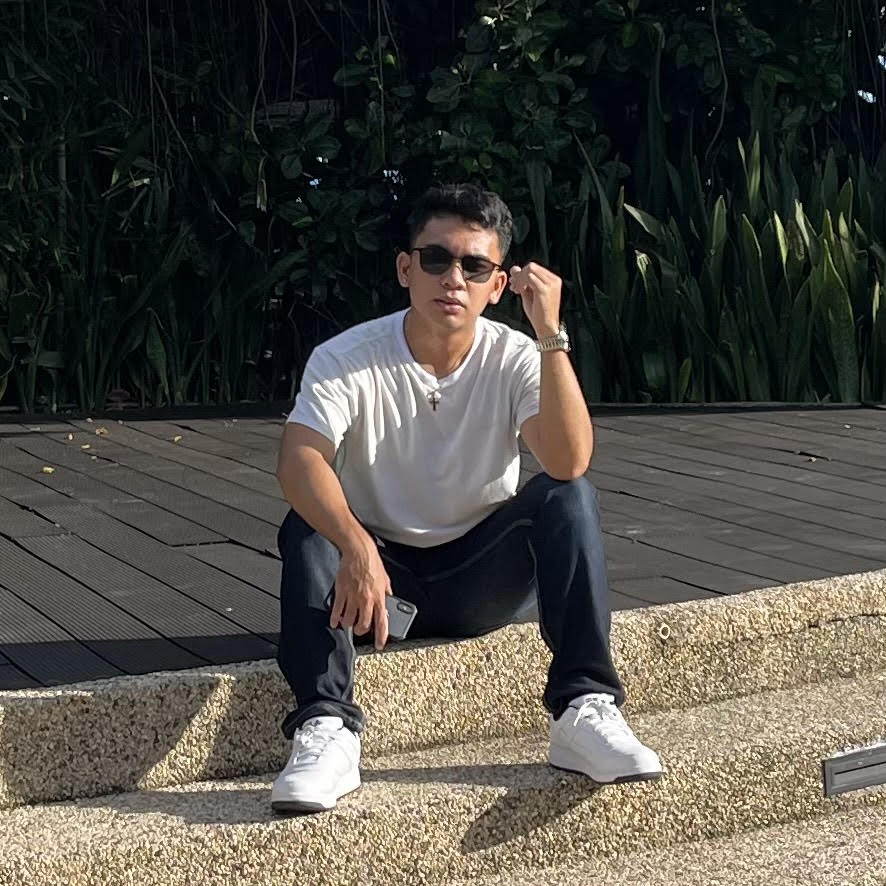

Who Are You?
by John Claidy Ken O. Taguran

Hello everyone! I am John Claidy Ken O. Taguran, from Poblacion Baclayon Bohol. 19 years of age and
I am a Computer Engineering Student from University of Bohol. My guiding principle in life is to be
self-sufficient, wise, always be true to yourself, and maintain focus. You don't have to be afraid of what
others think of you; failure is natural, and you can use it to gain some courage in order to live life and
maintain your sanity, because happiness follows sanity.
As a regular citizen, student, and son, I may not be much different from others my age, but I still
believe that I am unique in my own way and at my own pace. Most of them think I'm an extrovert because
they see me with people socializing without realizing that I spend most of my time on myself, which I
enjoy doing. I'm so self-sufficient and I am blessed with a sensitive spirit that leaps into action
whenever there is a need to stand up for righteousness, especially when it involves people. My humble
demeanor in dealing with others has earned me the respect of everyone with whom I interact.
I grew up with the absence of my biological parents. My grandparents were the ones who looked after me.
They serve as my motivation and inspiration to continue achieving my goals and developing myself. My
greatest accomplishment is to be sitting here right now. I believe that life is a constant work in
progress and that all moments, both monumental and quiet, contribute to who I am. Being self-sufficient,
living my life on my terms, being a good son and citizen, realizing I have more potential than I thought,
recovering from a mental breakdown, completing my schoolwork, and being able to learn and grow every day.
Well, 5 years from now, I will become a Computer Engineer and I will claim that! As I continue on my journey,
I may face many difficulties, obstacles, and breakdowns, but I will do whatever it takes to achieve my goals.
I will continue to improve, expand my network, purchase my dream home/car, be stable, own my own business,
and travel.